Tour the application
Everything on these screens is derived. No page was designed for the CRM specifically — the layout comes from the dictionary, which comes from the model. Once you can see which part of the model produced which part of the screen, you can change the screen by changing the model.
Signing in
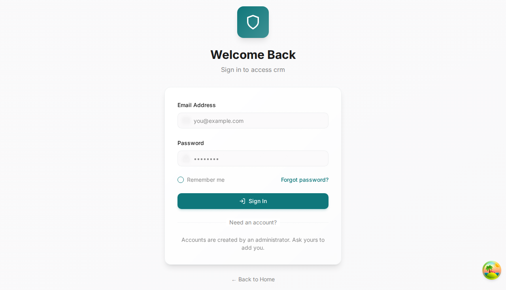
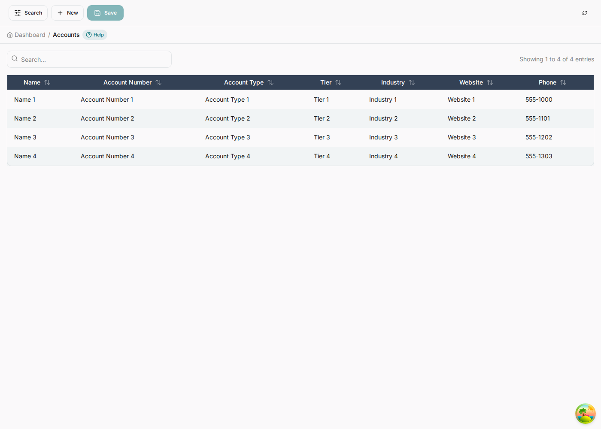
The dashboard is your categories

%%category directives. Heading, description and membership are
the model's; the eighth block, Application Dictionary, is the generator's own admin surface.
Rename a category or move an entity between groups in the model, regenerate, re-seed, reload: the dashboard reorganises. If your users cannot find things, that is a modelling fix, not a front-end one.
Lists
Every entity gets the same list: search, sortable columns, pagination, a New button, and a Help chip that explains the screen. The columns are the fields marked as displayed in the grid, in their sequence order.
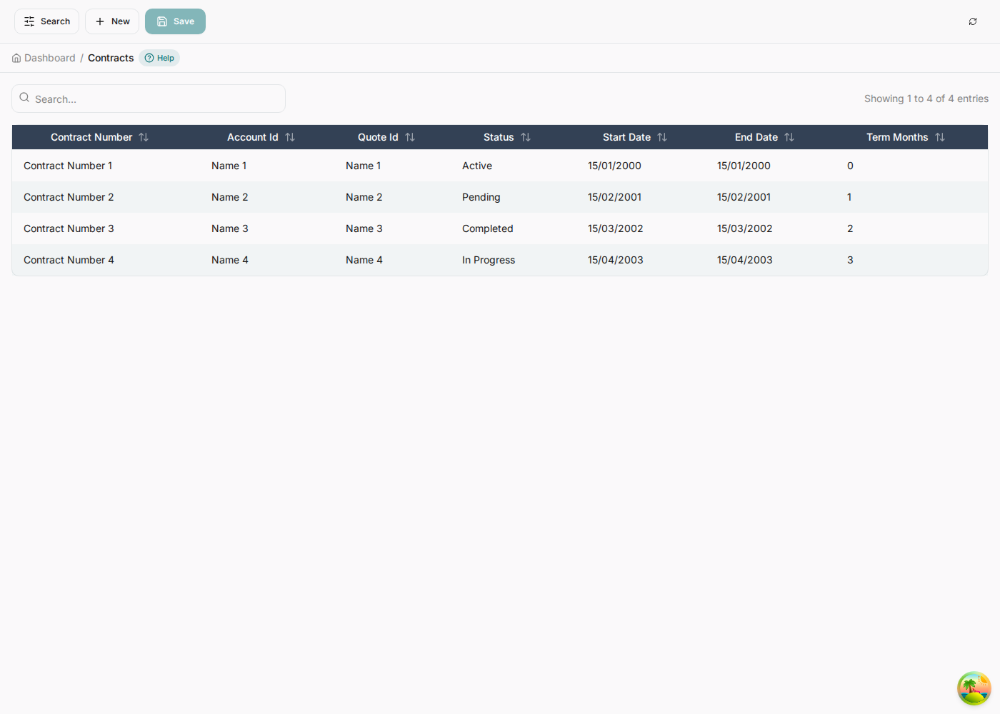
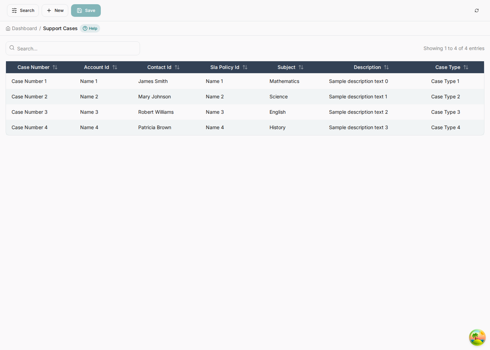
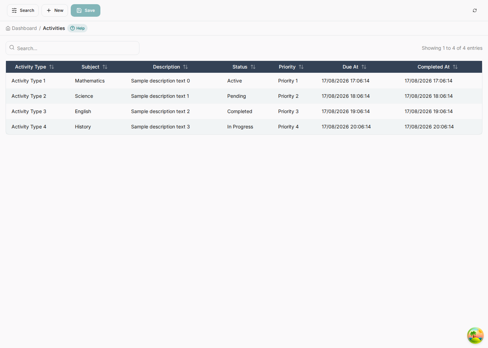
The same screen, seventeen times
None of these is special-cased. Every list below came out of the same generator pass and the same template; the only thing that differs between them is the entity's own field definitions. That is the claim worth checking, so here is the rest of the application rather than a flattering selection of it.
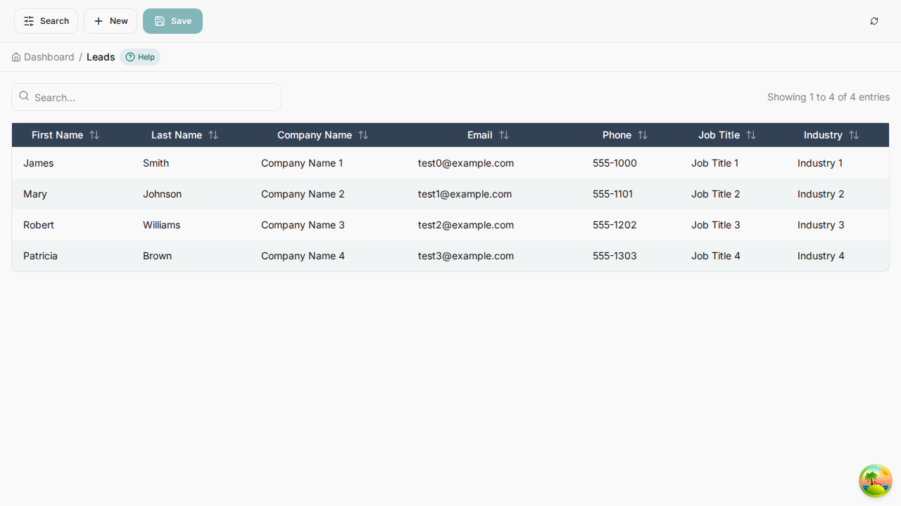
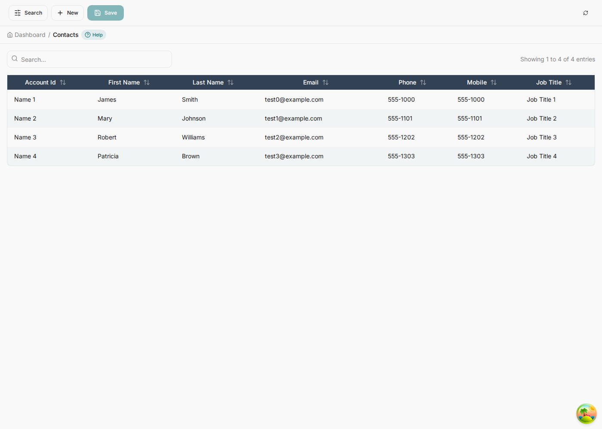
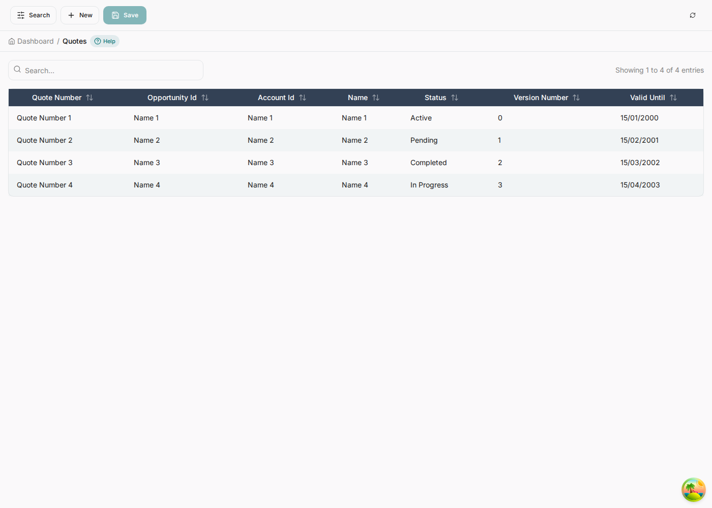
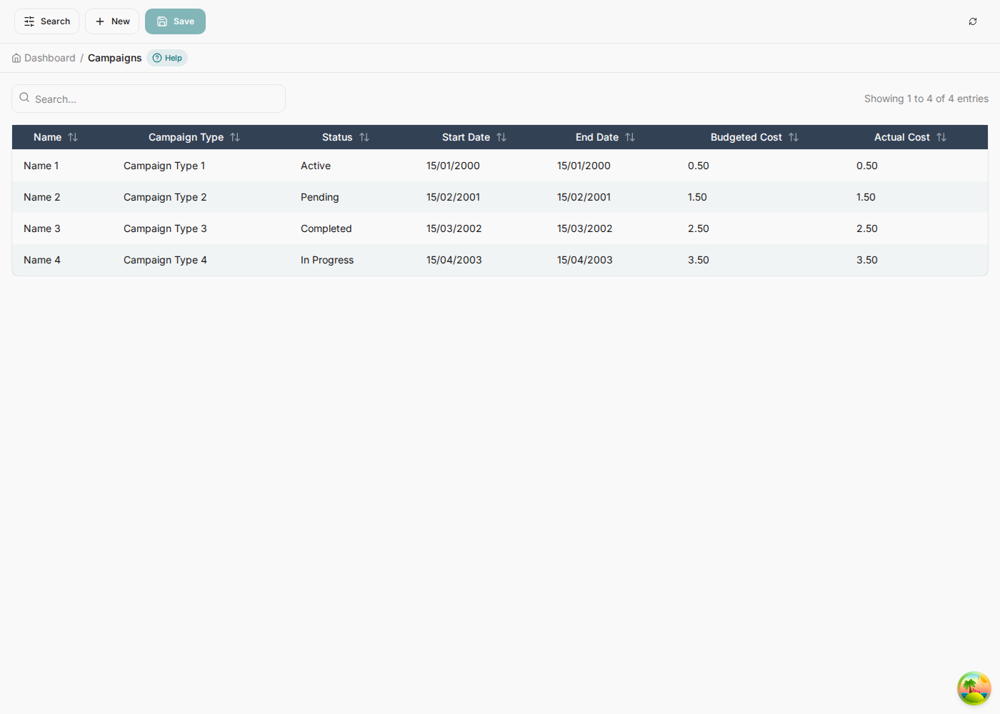
date and decimal — nothing here was formatted by hand.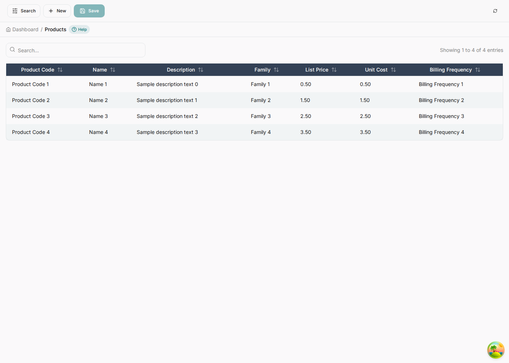
Nothing, per entity. Adding an eighteenth means adding a block to the erDiagram and
regenerating; the list, the form, the lookups, the help text, the audit coverage and the REST routes
arrive with it. The screens above are evidence of that, not a portfolio.
Forms, and where each control comes from
This is the part worth studying, because it is where the model's decisions become visible one at a time. Every field carries a badge naming its reference type, and that type decides the control.
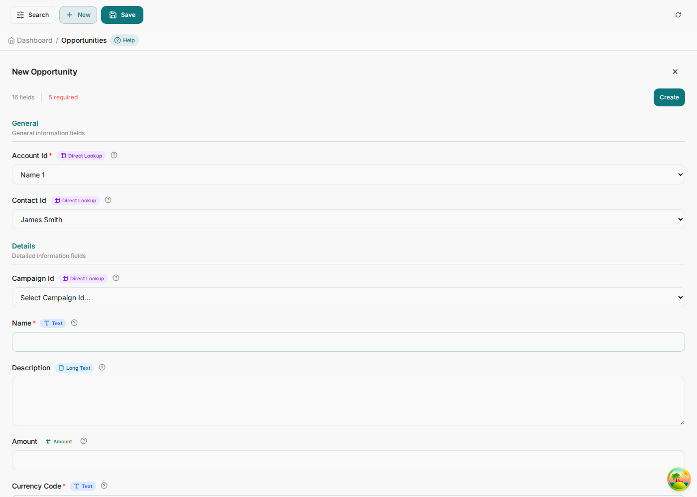
| In the model | Badge | Control |
|---|---|---|
string account_id FK | Direct Lookup | Select of the referenced entity, labelled by its display column |
%%field X.status enum: Y | Dropdown | Select of the enum's values, fetched from the list reference |
text description | Long Text | Textarea |
decimal amount | Amount | Numeric input |
datetime due_at | Date/Time | Date-time picker |
boolean auto_renew | Yes/No | Toggle |
email email | Email input with validation |

%%field … enum:, one integer,
two lookups. The difference between a dropdown and a text box here is one line in the model.
From the list to the record
The three screens every entity has are the same three screens: a list you search and sort, a form you fill in, and a detail view of what you saved. Here is one entity through all three, so the progression is visible rather than implied.
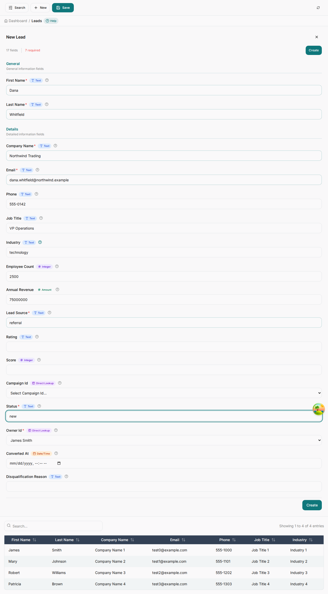
Saving is not a single event. Every save starts as a Draft; then the rules and workflows attached to the entity run together in one transaction. If all of them succeed the record is promoted to Final. If any fails, nothing they changed is kept, the record stays Draft, and the reason is written onto it.
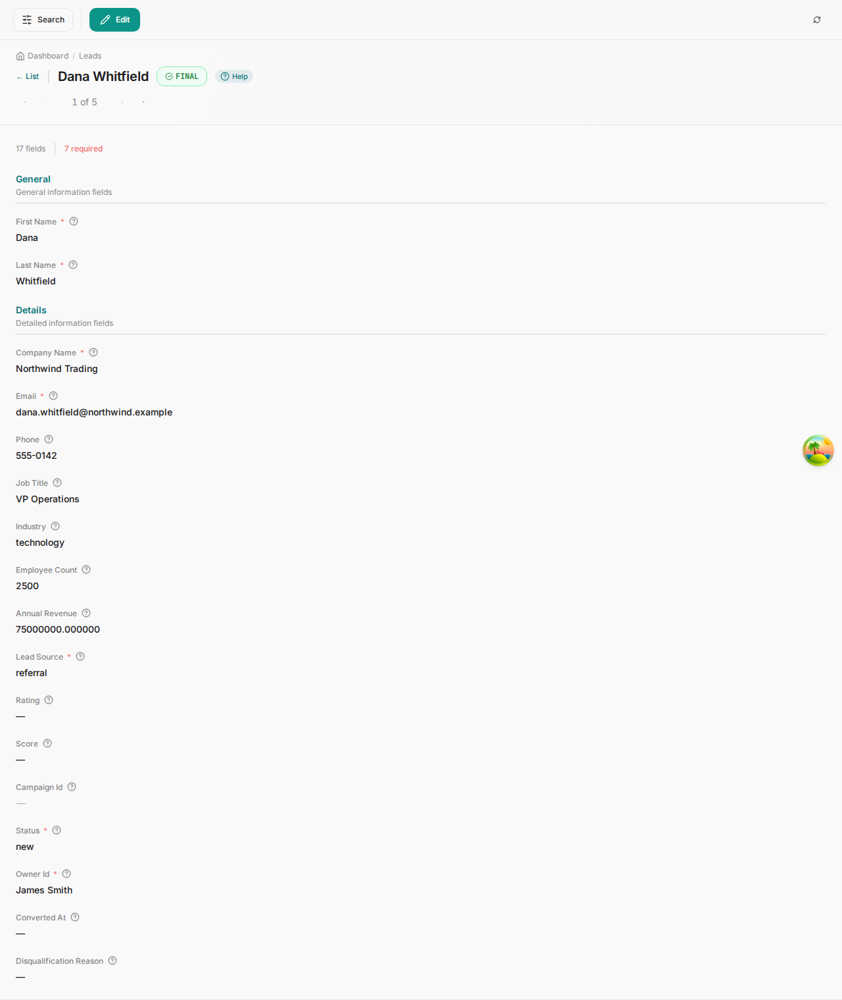
It means a rule refused the write or a workflow step failed, and the record carries the reason. That is the system telling you the model disagreed with the data — usually a required field a saga did not supply, or a validation-error action doing exactly its job.
Related records
A detail screen shows the children the ERD says it has. Because relationships are declared, the application knows an Opportunity has line items, quotes and activities, and shows them in place rather than making you search for them.
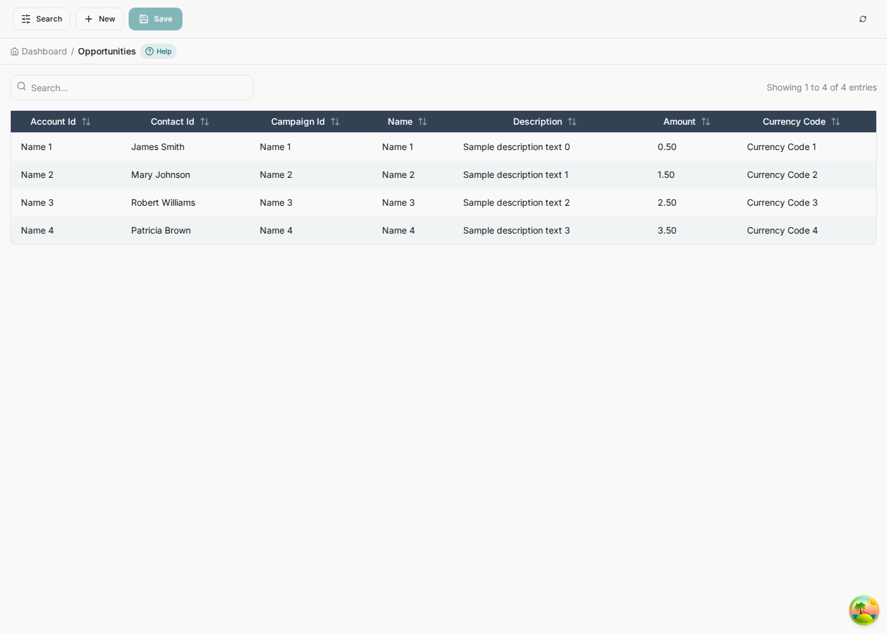
Help on every screen
Each window carries help generated from the model: what the entity is, which fields are mandatory, which are lookups, which other entities point back at it, and what happens when you save.
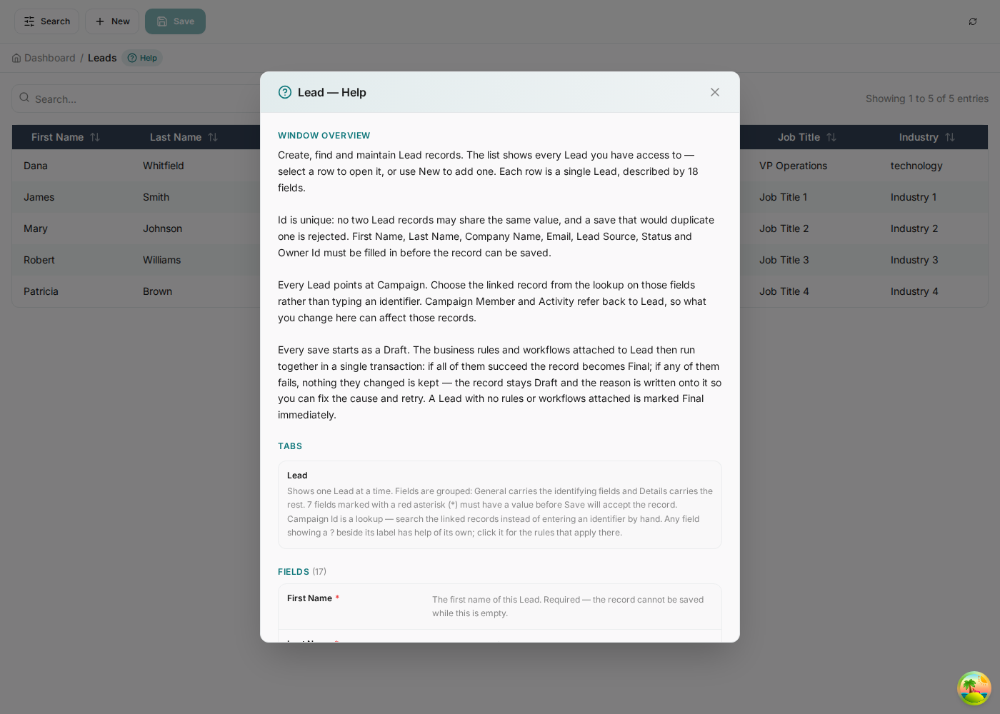
The text lives in the dictionary (sys_window.help, sys_tab.help,
sys_field.help), so an administrator can rewrite any of it from Window, Tab and Field
without touching the model or the code — and re-seeding will not clobber their edit.